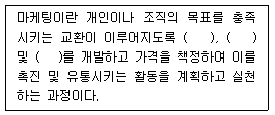
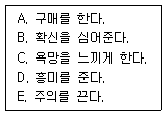
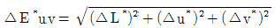

컬러리스트기사 (2011-08-21 기출문제)
1과목: 색채심리 마케팅
1. 색채의 공감각에 대한 설명 중 틀린 것은?
- 색의 농담과 색조에서 색의 촉감을 느낄 수 있다.
- 소리의 높고 낮음은 색의 명도, 채도에 의해 잘 표현된다.
- 좋은 냄새의 색들은 bright tone의 고명도 색상에서 느껴진다.
- 쓴맛은 순색과 관계가 있고, 채도가 낮은 색에서 느껴진다.
(정답률: 알수없음)

2. 다음 중 광고 매체(media) - 비이클(vehicle) - 매 체단위(unit)의 연결이 틀린 것은?
- 라디오 - FM 프로그램들 - 15초, 20초
- 신문 - 각종 일간 신문들 - 스포츠면, 5단
- 옥외광고 - 빌보드, 옥탑 등 - 100, 70, 50, 25m2
- 잡지 - 각종 월간지 및 주간지 등 - 띠(bar), 사각형태
(정답률: 알수없음)
3. 색채 시장조사의 자료수집 방법으로 적합하지 않은 것은?
- 조사연구법
- 패널조사법
- 현장관찰법
- 체크리스트법
(정답률: 알수없음)
4. 일반적인 색채선호원리와 가장 거리가 먼 것은?
- 아기들은 장파장의 색을 선호한다.
- 성인이 되면서 단파장의 색들을 선호한다.
- 이지적인 사람들은 장파장의 색을 선호한다.
- 여성들은 밝고 맑은 톤을 선호한다.
(정답률: 알수없음)
5. 색채의 공감각 중 미각과 관련하여 신맛을 연상시키는 색채는?
- 빨간색, 분홍색
- 청록색, 회색
- 노란색, 연두색
- 브라운, 올리브 그린
(정답률: 알수없음)
6. SD법(Semantic Differential Method)을 활용한 색채 이미지 조사법에 대한 설명 중 틀린 것은?
- 색채 감성의 객관적 척도이다.
- 단색체계에 대한 상대적인 비교 평가가 가능하다.
- 표준색간 색차를 보여준다.
- 색채 기획 과정에서 이미지의 위치를 찾을 수 있다.
(정답률: 알수없음)
7. 집단 구성원들의 의견을 수렴하여 건축물 또는 환 경시설물의 색채계획을 실시한 집단이 있다. 이러한 집단은 다음 중 어느 집단에 가까운가?
- 가격중심 집단
- 감성적 집단
- 신소비 집단
- 합리적 집단
(정답률: 알수없음)
8. 다음 색채와 연상의 연결 중 옳은 것은?
- 빨강 - 정열, 애정
- 녹색 - 고귀, 권력
- 노랑 - 위험, 우하
- 흰색 - 청결, 공포
(정답률: 알수없음)
9. 마케팅의 원리와 관련한 설명으로 틀린 것은?
- 매슬로우는 인간의 욕구단계를 생리적, 안전, 사회적, 존경, 자아실현 욕구로 구분하였다.
- 마케팅의 가장 기초는 기업중심적인 이윤추구 욕구이다.
- 마케팅은 만족시키는 대상에 대하여 표현되는 인간의 2차적 욕구(wants)를 중요하게 다룬다.
- 기업은 새로운 개념의 제품과 서비스를 필요로 하는 인간의 욕구 때문에 효과적인 마케팅을 필요로 한다.
(정답률: 알수없음)
10. 비렌(Birren Faber)의 색채 공감각에서 식당내부의 가구등에 식욕이 왕성하도록 유도하기 위한 색채는?
- 빨간색
- 노란색
- 주황색
- 파란색
(정답률: 알수없음)
11. 소비자 의사결정과정에서 대안평가 시 평가기준의 특성설명으로 틀린 것은?
- 평가기준은 제품유형과 소비자가 처한 상황에 따라 달라진다.
- 평가기준은 객관적일 수도 있고 주관적일 수도 있다.
- 평가기준의 수는 관여도와 상관없이 일정하게 정해져 있다.
- 평가기준은 제품 구매동기에 따라 다르게 작용한다.
(정답률: 알수없음)
12. 시장 세분화(Market Segmentation)의 기준이 될 수 없는 요인은?
- 인구 통계적 특성
- 지리적 특성
- 역사적 특성
- 심리적 특성
(정답률: 알수없음)
13. 색채심리마케팅 측면에서 색채문화에 대한 설명중 틀린 것은?
- 문화란 인간이 사회구성원으로서 직ㆍ간접적으로 취득한 종합정보로 색채조사분석을 통한 활용이 필요하다.
- 하위문화란 저급하고 천박스런 문화를 말하므로 녹 색계와 무채색계가 이에 속한다.
- 노년층은 권위적이고 연한 색채를 선호하나, 신세대들은 자유스럽고 다양성을 추구하는 경향이 짙다.
- 색채문화는 정체됨이 아니라 국내ㆍ외적으로 지역적 상황변수에 따라 언제나 변화할 수 있다.
(정답률: 알수없음)
14. 색채의 기능을 추구하는 색채조절의 방법 중 틀린것은?
- 색의 식별성, 명시성, 주의를 끄는 색 등의 효과를 이용한다.
- 수술실 환경색을 백색에서 청록색으로 바꿔 현기증, 졸도현상을 해소한다.
- 청색, 자색계열의 색이 아름답게 보이도록 백열등을 사용하여 조명효과를 높인다.
- 색의 보색과 조합하여 본래의 색보다 선명하게 보이도록 하는 대비효과를 이용한다.
(정답률: 알수없음)
15. 컬러 활용의 조사자료 분석에 대한 설명 중 틀린것은?
- 자료 분석의 목적은 자료를 간명하게 요약하는 것이다.
- 통계분석 결과가 모호한 경우 확률적으로 해석하고 결론을 내리는 것이다.
- 자료를 간명하게 요약하는 데는 빈도분포, 퍼센트, 평균치 등의 기술통계가 유용하다.
- 자료 분석의 첫 단계는 소비자의 성향이나 문항들간의 관계를 기술하는 상관계수나 요인분석, 군집분석, 판별분석 등 고급통계가 필요하다.
(정답률: 알수없음)
16. 표적고객에게 광고를 통해 내세우고자 하는 제품의 특징을 지칭하는 용어는?
- 소구점
- 카피
- 일러스트레이션
- 배열
(정답률: 알수없음)
17. TV 광고에 대한 설명 중 가장 옳은 것은?
- 기록성과 신뢰성이 강하다.
- 시사성이 강하고 광고비가 저렴하다.
- 오락성이 짙고 뉴스성이 있다.
- 특정한 독자층을 갖고 있다.
(정답률: 알수없음)
18. 다음 설명하는 내용의 세 개 ( )안에 들어갈 용어로 적합하지 않은 하나는?

- 제품
- 이익
- 서비스
- 아이디어
(정답률: 알수없음)
19. 기업이 소비자에게 마케팅 경영 이미지를 전략적으로 높이기 위해 상징물, 인쇄물과 유니폼 등 모든 디자인 표현을 통일하는 일은?
- Merchandising
- Campaign
- Visualization
- C.I.P
(정답률: 알수없음)
20. 마케팅에서 색채의 역할과 사용에 관한 설명으로 가장 거리가 먼 것은?
- 소비자의 시선을 끌어 대상물의 존재를 두드러지게 한다.
- 기업의 철학이나 기업의 주요 제품 이미지를 소구 하는 CI 컬러로 사용한다.
- 생산자의 기획의도에 맞추어 기업의 이미지에 맞는 이미지 색채를 적용한다.
- 유행색은 시대가 선호하는 이미지, 상징적 의미 등이 소비자의 라이프 스타일과 가치관에 영향을 준다.
(정답률: 알수없음)
2과목: 색채디자인
21. 제품의 수명주기 중 첫 번째 단계인 도입기에 모 색되어져야 할 사항으로 틀린 것은?
- 아이디어 단계
- 평가 단계
- 광고홍보 단계
- 상품화 단계
(정답률: 알수없음)
22. 그린 디자인의 디자인 방법이 아닌 것은?
- 재료의 순수성 및 호환성을 고려하여 디자인한다.
- 각각의 조립과 분해가 쉽도록 디자인한다.
- 재활용을 고려한 디자인으로 많은 노동력과 복잡한 공정이 요구된다.
- 폐기 시 재활용률이 높도록 표면처리 방법을 고안 한다.
(정답률: 알수없음)
23. 다음 중 기능주의에 대한 작가 별 주장이 바르게 연결된 것은?
- 그리노 - 최고의 형태란 쾌속정의 기능적 형태이다.
- 빅터파파넥 - 형태는 기능을 계시한다.
- 오토와그너 - 형태는 기능을 따른다.
- 르 꼬르뷔지에 - 예술은 필요에 따라서만 지배된다.
(정답률: 알수없음)
24. 색이 가지고 있는 심리적, 생리적, 물리적 성질을 근거로 색을 선택하는 방법을 종합적으로 의미하는 것은?
- 색채조절
- 색채배분
- 색채효과
- 색채구성
(정답률: 알수없음)
25. 환경 디자인 프로세스 중 옳은 것은?
- 기획ㆍ구상 - 실시 - 계획 - 유지관리
- 계획 - 기획ㆍ구상 - 실시 - 유지관리
- 계획 - 기획ㆍ구상 - 유지관리 - 실시
- 기획ㆍ구상 - 계획 - 실시 - 유지관리
(정답률: 알수없음)
26. 웹 브라우저의 특성상 서로 다른 색상을 재현하는 단점을 보완, 어느 시스템에서도 동일한 색상을 갖는 기본적인 웹 기반 색상은?
- 24 bit RGB
- 256 시스템 컬러
- 216 웹 안전색
- indexed 컬러
(정답률: 알수없음)
27. 르 꼬르뷔제의 이론과 그의 사상에서 가장 중요시 한 것은?
- 미의 추구와 이론의 바탕을 치수에 관한 모듈(module)에 두었다.
- 근대 기술의 긍정적인 면을 받아들이고, 개성적인 공예가 되어야한다고 주장하였다.
- 새로운 건축술의 확립과 교육에 전념하여 근대적인 건축공간의 원리를 세웠다.
- 사진을 이용한 방법으로 새로운 조형의 표현 수단을 제시하였다.
(정답률: 알수없음)
28. 디자인에서 우선적으로 고려되어야 할 사항이 아닌 것은?
- 경제성
- 합목적성
- 심미성
- 상징성
(정답률: 알수없음)
29. 다음 중 바우하우스의 교육 이념이 아닌 것은?
- 인간이 기계에 의해서 노예화가 되는 것을 방지한다.
- 인간에 의한 규격화된 합리적인 양식을 추구한다.
- 기계의 이점은 유지하면서 결점만 제거한다.
- 일시적인 것이 아닌 우수한 표준을 창조한다.
(정답률: 알수없음)
30. 다음 중 디자인의 조형요소로만 짝지어진 것은?
- 점, 선, 면, 입체
- 형, 색, 재질감, 빛
- 통일, 변화, 조화, 균형
- 유사, 대비, 균일, 강화
(정답률: 알수없음)
31. 다음 소비자 구매심리의 단계 순서로 옳은 것은?

- C - D - E - B - A
- D - E - C - B - A
- E - D - C - B - A
- E - D - B - C - A
(정답률: 알수없음)
32. 다음 중 디자인 사조와 관련 내용의 연결이 틀린것은?
- 구성주의 - 말레비치 - 기계적, 기하학적 형태를 중시하고 역학적인 미를 창조
- 신조형주의 - 몬드리안 - 개성을 배제하는 주지주의적 추상미술운동
- 추상표현주의 - 피카소 - 작자의 마음의 상태, 감정, 상상, 꿈 등의 표현에 중점을 둠
- 미래주의 - 보치오니 - 속도와 움직임에 대한 표현을 중요시함
(정답률: 알수없음)
33. 게슈탈트의 원리 중 인접성(proximity)의 원리에 해당하지 않는 것은?
- 인간은 요소들끼리 서로 관계를 지어 보려는 경향이 있다.
- 형태를 구성하는 구성 요소들간의 거리를 일컫는 다.
- 개개의 요소에서 비슷한 모양의 것들을 서로 무리지어 보는 지각현상이다.
- 형태와 명암이 다른 개별적인 단위들의 통일과 조화에 적합하다.
(정답률: 알수없음)
34. 옥외광고, 전단 등 제품의 판매촉진을 위한 모든 활동수단으로 판매촉진을 위한 광고 중 4대 매체광고를 제외한 모든 광고, 홍보활동을 뜻하는 것은?
- POP광고
- SP광고
- 스폿광고
- 로컬광고
(정답률: 알수없음)
35. 1920년 ~ 30년대 프랑스와 미국을 중심으로 널리 유행했던 아르 데코(Art Deco) 양식에 대한 설명이 옳은 것은?
- 자연의 추상적 형태들을 기하학적인 양식으로 표현 하였다.
- 조셉 알버스(Josef Albers)에 의해 주창되었다.
- 형태의 표준화를 위한 양식 운동이다.
- 경제공항을 계기로 급격히 확산되었다.
(정답률: 알수없음)
36. 인쇄물에서 핀트가 잘 맞지 않았을 때 일어나는 눈의 아른거림 현상은?
- 실루엣(silhouette)
- 무아레(moire)
- 패턴(pattern)
- 착시(optical illusion)
(정답률: 알수없음)
37. 카탈로그, 브로슈어, 책자 인쇄 등에 주로 사용되며, 4도인쇄라 하여 CMYK 등으로 인쇄되는 평판 기법은?
- 목판인쇄
- 활판인쇄
- 옵셋인쇄
- 실크인쇄
(정답률: 알수없음)
38. 다음의 환경디자인 영역 중 가장 공공성이 큰 분야는?
- 도시 디자인
- 조형물 디자인
- 인테리어 디자인
- 이벤트 디자인
(정답률: 알수없음)
39. 제품디자인의 특성이 아닌 것은?
- 상품으로서의 가치를 지닌다.
- 제품 기본 기능 외 사용상의 편리함, 유지관리의 용이함이 요구된다.
- 디자이너의 개성이 가장 중요하다.
- 대량생산을 전제로 한다.
(정답률: 55%)
40. 생태학적 디자인의 지속가능한 개발(sustainabledevelopment)이 의미하는 것은?
- 기술을 지속적으로 사용하여 자연을 보존한다.
- 자연이 먼저 보존되고 인간과 환경이 조화되는 개발을 한다.
- 기술을 지속적으로 발전시켜 인간 사회를 개발시킨다.
- 인간, 기술, 자연을 지속적으로 개발한다.
(정답률: 알수없음)
3과목: 색채관리
41. RGB 각각에 대하여 8비트씩 적용된 색채의 합이다. 256(R)*256(G)*256(B) = 16777216은 몇 비트인가?
- 8비트
- 24비트
- 48비트
- 64비트
(정답률: 알수없음)
42. 색영역 맵핑(color gamut mapping)에 대한 설명중 옳은 것은?
- 색영역 클립핑 방법은 색영역의 바깥에 산포되어 있는 색을 색영역의 내부로 압축시키고 옮겨서 붙이는 작업방법이다.
- 색영역은 입력하거나 출력하는 디바이스의 제조업체에 관계없이 형태와 크기가 동일하다.
- 색영역 맵핑은 유니폼 색공간에서 이루어져야 하기 때문에 입ㆍ출력에 활용되는 디바이스들의 특성화가 선행되어야 한다.
- 색영역 압축방법은 모든 색을 출력하는 색영역의 외부로 옮겨 붙이는 방법이다.
(정답률: 알수없음)
43. 육안검색의 경우 고채도의 색채에서 점점 구분이 엄격해지는 것은 색채의 어떤 속성 때문인가?
- 색상
- 명도
- 채도
- 톤
(정답률: 알수없음)
44. 광선은 발색층에서 확산, 투과, 흡수되면서 진행한다. 일정한 두께를 가진 발색층에서 감법 혼색을 하는 경우에 성립하는 CCM의 기본 원리는?
- 데이비스-깁슨(Davis-Gibson) 이론
- 파버 비렌(Faber Birren) 이론
- 아더 포프(Arthur Pope) 이론
- 쿠벨카 문크(Kubelka Munk) 이론
(정답률: 알수없음)
45. 색채의 디바이스 간의 호환성을 확보하기 위한 노력에 대한 설명으로 적합하지 않은 것은?
- 국제적인 기구를 통한 측색기반의 디바이스 특성을 바탕으로 색채조절을 호환성 있게 실행하려는 노력
- 각 디바이스의 특성을 공개하고 이에 적합한 색채 조절이 이루어지도록 표준화하는 노력
- 컬러 어피어런스 모델이 프로파일 연결공간의 전후에서 적용
- 입력장치와 출력장치를 연결하는 프로파일 연결공간에서는 입력장치의 RGB 색채공간을 사용
(정답률: 알수없음)
46. 산업 현장에서 자주 사용하는 측색기의 백색 기준물로 알맞은 것은?
- 백색 세라믹 타일
- 알루미늄 판
- 압축 우드락
- 두꺼운 흰색 종이
(정답률: 알수없음)
47. 파일 사이즈 120KB, 이미지 사이즈 8cm * 12cm의 비트맵 이미지를 파일 사이즈는 그대로 유지하고 이미지 사이즈만 절반으로 줄였을 때와 관련한 설명으로 옳은 것은?
- 인쇄 시에는 아무런 변화가 없다.
- 인쇄 시 크기는 변화가 없고, dpi만 높아졌다.
- 인쇄 시 크기는 줄고, dpi는 높아졌다.
- 인쇄 시 색상의 수가 줄어든다.
(정답률: 알수없음)
48. 광택도에 대한 설명 중 틀린 것은?
- 변각광도 분포는 기준광원을 45도에 두고 관찰각도를 옮겨서 반사각도를 측정하는 방법이다.
- 광택도는 변각광도 분포, 경면광택도, 선명광택도로 측정한다.
- 광택도는 100을 기준으로 30 ~ 40을 무광택으로 분류 한다.
- 광택의 정도는 표면의 매끄러움과 직접적인 관계가 있다.
(정답률: 알수없음)
49. 광원 빛의 10 ~ 40%가 대상 물체에 직접 조사되고 나머지는 벽이나 천장에 반사되어 조사되는 방식으로, 그늘짐이 부드러우며 눈부심도 적은 조명방식에 해당하는 것은?
- 전반확산조명
- 직접조명
- 반간접조명
- 반직접조명
(정답률: 알수없음)
50. 이미지의 투명성과 관련된 알파채널에서 향상된 기능제공, 트루컬러 지원, 비손실 압축을 사용하여 이미지 변형 없이 원래 이미지를 웹 상에 그대로 표현할 수 있는 파일 포맷은?
- EPS
- PNG
- PSD
- PCX
(정답률: 알수없음)
51. 육안으로 색을 비교할 때의 주의사항이다. 틀린 것은?
- 관찰자는 선명한 색의 옷을 피해야 한다.
- 여러 색채를 검사하는 경우 계속 검사를 피한다.
- 초록색을 비교한 경우 노란색을 바로 비교해서는 안된다.
- 높은 채도의 색을 검사한 다음 낮은 채도의 색을 검사한다.
(정답률: 알수없음)
52. 다음은 KS 표준의 용어 중 빛에 대한 설명으로 틀린 것은?
- 자외선부터 적외선까지의 파장 범위에 포함되는 전자파
- 시각계에 생기는 밝기 및 색의 지각ㆍ감각
- 눈에 들어와 시감각을 일으킬 수 있는 전자파
- 적외방사 보다 긴 파장 범위에 포함되는 방사
(정답률: 알수없음)
53. 디지털 영상출력장치의 성능을 표시하는 600 dpi란?
- 1 inch 당 600개의 화점이 표시되는 인쇄영상의 분해능을 나타내는 수치
- 1 시간당 최대 인쇄매수로 나타낸 프린터의 출력 속도를 표시한 수치
- 1cm 당 600개의 화소가 표시되는 모니터 영상의 분해능을 나타낸 수치
- 1 분당 표시되는 화면수를 나타낸 모니터의 응답 속도를 표시한 수치
(정답률: 알수없음)
54. 빛을 내는 물체인 광원에 대한 측정을 광측정(photometry)이라 한다. 4가지 측정량과 단위의 연결이 틀린 것은?
- 조도(illuminance) : lx
- 광도(luminous intensity) : W
- 전광속(luminous flux) : lm
- 휘도(luminance) : cd/m2
(정답률: 알수없음)
55. 색채에서 사용되는 색료와 혼색 기술의 차이에 따라 색채구현의 영역은 다르다. 다음의 색채구현 방법과 색영역에 대한 설명 중 틀린 것은?
- 브라운관 방식의 모니터와 LCD 모니터에서 구현되는 색영역은 같다.
- 유성 페인트와 수성 페인트의 경우, 주색을 이루는 색료와 색채가 다르므로 두 종류 페인트의 색채영역은 차이가 난다.
- 양화필름(positive film)과 음화필름(negative film)은 명도 범위가 다르다.
- 컬러 프린터에는 감법혼색에 의한 색영역에 있는 색이 구현된다.
(정답률: 알수없음)
56. 염료 및 염색에 대한 설명 중 틀린 것은?
- 염료 이온이 피염제에 화학적인 결합을 하는 것을 이용한다.
- 염료로서의 역할을 하기 위해서는 분자가 직물에 흡착되어야 한다.
- 최초의 합성염료가 만들어진 것은 20세기 초이다.
- 효율적인 염색을 위해서 염료가 용매에 잘 용해되어야 한다.
(정답률: 알수없음)
57. 색차 표시 방법 중 보정 인자의 기준조건에 대한 연결이 틀린 것은?
- 조도 : 1000 룩스
- 조명 : D65와 유사한 광원
- 시료의 크기 : 시축 중심 10도 크기
- 시료의 분리 : 직접 경계면이 접하는 최소 간격
(정답률: 알수없음)
58. 특정조건에 따라 발색되는 모든 색을 포함하는 색도 그림 또는 색공간 내의 영역을 무엇이라 하는가?
- Color Gamut
- Color Equation
- Color Matching
- Color Locus
(정답률: 알수없음)
59. 'R(λ) = S(λ) * B(λ) * W(λ)' 는 절대분광반사율의 계산식이다. 각각의 의미가 틀린 것은?
- R(λ) = 시료의 절대분광반사율
- S(λ) = 시료의 측정 시그널
- B(λ) = 흑색표준의 절대분광반사율 값
- W(λ) = 백색표준의 절대분광반사율 값
(정답률: 알수없음)
60. 무기안료와 유기완료의 특성이 옳게 연결된 것은?
- 내열성 : 유기안료가 무기안료보다 뛰어나다.
- 경제성 : 유기안료가 무기안료보다 뛰어나다.
- 내광성 : 무기안료가 유기안료보다 뛰어나다.
- 착색력 : 무기안료가 유기안료보다 뛰어나다.
(정답률: 알수없음)
4과목: 색채지각론
61. 일정한 색의 자극이 사라진 후에도 지속적으로 색의 자극을 느낄 때 나타나는 대비 현상은?
- 계시대비
- 명도대비
- 색상대비
- 채도대비
(정답률: 알수없음)
62. 색채지각에 대한 설명 중 틀린 것은?
- 눈의 망막 중 중심와에는 추상체가 밀집되어 있다.
- 간상체는 추상체에 비해 해상도가 떨어진다.
- 유채색 지각과 관련된 광수용기는 간상체이다.
- 스펙트럼 민감도란 광수용기가 상대적으로 어떤 파장에 민감한가를 나타낸 것이다.
(정답률: 알수없음)
63. 다음 중 색의 혼합방법이 나머지와 다른 하나는?
- 무대조명
- 네거티브 필름의 제조
- 모니터
- 컬러 슬라이드
(정답률: 알수없음)
64. 다음 중 색의 긍정적 잔상을 설명하는 잔상의 원칙이 아닌 것은?
- 원래의 자극과 같은 색으로 느껴지기는 하나 밝기가 다소 감소되는 경우를 헤링의 잔상이라 한다.
- 원래의 자극과 밝기는 같으나 색상은 보색으로서 채도가 낮은 것으로 느껴지는 경우를 푸르킨예의 잔상이라 한다.
- 원래의 자극과 같은 정도의 밝기이나 색상의 변화를 느끼는 경우를 코프카의 전시야라 한다.
- 원래의 자극과 같은 자극의 정도로 지속적으로 느껴지는 스윈들의 유령이라 한다.
(정답률: 알수없음)
65. 운동 경기의 선수복장은 다음 중 어느 색을 사용할 때 속도감이 높아져 보여 상대편을 심리적으로 위 축시키는 효과를 얻을 수 있을까?
- 검정
- 흰색
- 빨강
- 파랑
(정답률: 알수없음)
66. 실내디자이너가 여름 휴양지에 있는 리조트의 실내계획을 의뢰받았다. 다음 중 어떤 색의 타일의 배합을 고르는 것이 가장 효과적이겠는가?
- 마젠타 / 파랑
- 흰색 / 파랑
- 노랑 / 주황
- 연두 / 녹색
(정답률: 알수없음)
67. 무대 위에서 빨강, 녹색, 파랑의 조명색을 동시에 교차시키면 어떤 색으로 보일까?
- 흰색
- 노란색
- 회색
- 주황색
(정답률: 알수없음)
68. 붉은 사과를 보았을 때 지각되는 빛의 파장에 가장 근접한 것은?
- 300nm ~ 400nm
- 400nm ~ 500nm
- 500nm ~ 600nm
- 600nm ~ 700nm
(정답률: 알수없음)
69. 한 가지 색으로 보이는 직조 면을 확대해보면 여러 가지 색으로 짜여 있음을 알 수 있다. 이와 같은 혼색방법의 예가 아닌 것은?
- TV의 화면
- 점묘법
- 옵아트
- 색팽이
(정답률: 알수없음)
70. 19세기 인상파의 점묘 병치혼색에서 주로 사용한 방법으로 생생한 색채감을 느끼게 하는 대비는?
- 보색대비
- 면적대비
- 명도대비
- 채도대비
(정답률: 알수없음)
71. 빨강에 대한 잔상이 녹색이고, 노랑에 대한 잔상이 파랑인 것을 설명할 수 있는 이론과 관계없는 것은?
- 세 가지 기본색의 조합으로 모든 색을 경험한다는 이론이다.
- 이중색채대립 세포와 관련이 있다.
- 반대색설 또는 색채지각의 대립과정이론이라고 한다.
- 색채대립세포는 한 가지 색에 대해 흥분하고 다른색에 대해서는 억제반응을 보인다.
(정답률: 알수없음)
72. 병치혼합에 관한 설명 중 틀린 것은?
- 감법혼색의 일종이다.
- 점묘법을 이용한 인상파 화가의 그림에서 볼 수 있는 색혼합 방법이다.
- 비잔틴 미술에서 보여지는 모자이크 벽화에서 볼 수 있는 색혼합 방법이다.
- 두 색의 중간적 색채를 보게 된다.
(정답률: 알수없음)
73. 다음 중 주목성과 시인성이 가장 높은 색은?
- 주황색
- 초록색
- 파란색
- 보라색
(정답률: 알수없음)
74. 일정한 공간에 3차원적인 덩어리가 꽉 차 있는 부피감에서 보이는 색은?
- 평면색(film color)
- 표면색(surface color)
- 경영색(mirrored color)
- 공간색(volume color)
(정답률: 알수없음)
75. 다음의 색채에서 느껴지는 온도감이 다른 하나는?
- 빨강
- 주황
- 노랑
- 파랑
(정답률: 알수없음)
76. 다음 중 심리적으로 진출하는 느낌을 강조할 수 있는 색의 조건으로만 연결된 것은?
- 차가운 색 - 밝은 색 - 유채색
- 차가운 색 - 어두운 색 - 무채색
- 따뜻한 색 - 밝은 색 - 유채색
- 따뜻한 색 - 어두운 색 - 무채색
(정답률: 알수없음)
77. 파란색 광고지가 회색 벽 위에 붙어 있을 때는 선명해 보이고, 초록색 벽 위에 붙어 있을 때는 흐리게 보이는 것은 무엇 때문인가?
- 동시대비
- 명도대비
- 보색대비
- 채도대비
(정답률: 알수없음)
78. 비가 내린 후 하늘에 무지개를 볼 수 있는 것은 빛의 무슨 현상 때문인가?
- 회절
- 굴절
- 간섭
- 산란
(정답률: 알수없음)
79. 색의 동화 현상에 대한 설명으로 옳은 것은?
- 두 색이 맞붙어 있을 때 그 경계 주변에서 색상, 명도, 채도 대비의 현상이 보다 강하게 일어나는 현상이다.
- 청록색은 흥분을 가라앉히는 색이며, 빨간색은 혈액순환을 자극해 따뜻하게 느껴지는 색이다.
- 같은 회색 줄무늬라도 파랑 위에 놓인 것은 파랑에 가까워 보이고, 노랑 위에 놓인 것은 노랑에 가까워 보인다.
- 빨강을 본 후 노랑을 보게 되면, 노랑이 연두색에 가까워 보이는 현상이다.
(정답률: 알수없음)
80. 빛의 혼합에 관한 설명 중 옳은 것은?
- 녹색 빛과 파란색 빛을 한 곳에 비추어 나타나는 색은 400nm~500nm의 파장을 갖는다.
- 녹색 빛과 파란색 빛을 한 곳에 비추어 나타나는 색은 500nm~600nm의 파장을 갖는다.
- 빨간색 빛과 녹색 빛을 한 곳에 비추어 나타나는 색은 400nm~500nm의 파장을 갖는다.
- 빨간색 빛과 녹색 빛을 한 곳에 비추어 나타나는 색은 600nm~700nm의 파장을 갖는다. 자
(정답률: 알수없음)
5과목: 색채체계론
81. 먼셀 색체계를 규정한 한국산업표준은?
- KS A 0011
- KS A 0062
- KS A 0074
- KS A 0084
(정답률: 알수없음)
82. 문ㆍ스펜서 색채 조화론의 미도계산 공식은?
- M = 0/C
- W + B + C = 100
- (Y/Yn)＞0.5

(정답률: 알수없음)
83. 다음 중 관용색명의 설명으로 틀린 것은?
- 시대, 장소, 유행 등에서 이름을 딴 것과 이미지의 연상어에 기본적인 색명을 붙여서 만든 것은 관용색명에서 제외된다.
- 계통색 이름을 따르기 어려운 경우는 관용색 이름을 사용해도 된다.
- 습관상으로 오래전부터 사용하는 색 하나하나의 고유색명과 현대에 와서 사용하게 된 현대색명으로 나눈다.
- 자연현상에서 유래된 색명에는 하늘색, 땅색, 바다색, 무지개색 등이 있다.
(정답률: 알수없음)
84. 다음 중 CIE 색채규정에 대한 설명 중 상용광원 설명으로 옳은 것은?
- 표준광 D65 또는 보조 표준광 D50, D55 혹은 D75를 근사적으로 실현하는 광원
- 표준광에 준하여 보조적으로 사용하는 측색용 광
- 백열전구로 조명되는 물체색을 표시할 경우에 사용
- 직사 태양광으로 조명되는 물체색을 표시할 필요가 있는 경우에 사용
(정답률: 알수없음)
85. 파버비렌의 조화론에 대한 설명이 틀린 것은?
- Color - Shade - Black은 색채의 깊이와 풍부함이 있다.
- Tint - Tone - Shade는 색삼각형에서 가장 세련되고 감동적이다.
- Color, White, Black, Tint, Shade, Gray, Tone 등이 조화론의 기본이 된다.
- Color - Tint - White는 명도의 연속으로 안정적인 디자인을 할 수 있다.
(정답률: 알수없음)
86. ISCC-NIST 체계 중 가장 높은 채도를 표시하는 기호는?
- vp
- v
- p
- brill
(정답률: 알수없음)
87. 먼셀 색입체를 수평으로 전달했을 때 나타나는 상태는?
- 동일 색상면
- 동일 채도면
- 명도 단계
- 동일 명도면
(정답률: 알수없음)
88. 오스트발트의 기호 표기법에 따른 19 la에 대한 설명은?
- 색상은 19(1 sea green)이고, 백색량은 8.9%, 흑색량은 11% 이다.
- 색상은 19(1 leaf green)이고, 백색량은 8.9%, 흑색량은 11% 이다.
- 색상은 19(1 sea green)이고, 백색량은 11%, 흑색량은 8.9% 이다.
- 색상은 19(1 leaf green)이고, 백색량은 11%, 흑색량은 8.9% 이다.
(정답률: 알수없음)
89. 색채 표준화의 조건과 목적으로 옳은 것은?
- 색의 배색원리 설명
- 관측자의 색좌표 정의
- 색의 정확한 측정 및 전달
- 색의 비교 및 분석
(정답률: 알수없음)
90. 다음 중 관용색명이 아닌 것은?
- Magenta
- Grayish Pink
- Beige
- Peacock Green
(정답률: 알수없음)
91. 전통 방위색과 상징으로 옳은 것은?
- 황색 - 중앙 : 가을, 황룡(黃龍), 인(仁)
- 청색 - 동쪽 : 겨울, 백호(白虎), 의(義)
- 적색 - 남쪽 : 여름, 주작(朱雀), 예(禮)
- 백색 - 서쪽 : 봄, 현무(玄武), 지(智)
(정답률: 알수없음)
92. 국기나 상징적 색채표현 등에 사용되는 강한 대비의 배색방법은?
- 토널 배색
- 까마이외 배색
- 트리콜로 배색
- 톤온톤 배색
(정답률: 알수없음)
93. L*a*b* 색공간에서 a*와 b*값이 증가하면서 점이 중앙에서 바깥으로 가게 되면 채도는 어떻게 변하는 가?
- 변함없다.
- 명도와 비례하여 변한다.
- 감소한다.
- 증가한다.
(정답률: 알수없음)
94. 슈브롤의 색채조화론 중 도미넌트 컬러에 관한 설명으로 옳은 것은?
- 좁은 면적의 배색은 가까이에서는 분별할 수 있어도 먼 거리에서는 하나의 색으로 보이는 경향이 있으며 자연물의 배색은 이를 이용한 것이 많다.
- 전체적으로 하나의 주된 색의 배색은 하나의 감성으로 이해되며, 조화롭게 보인다.
- 두 색이 부조화를 이룰 때 무채색을 색채와 색채사 이에 넣으면 하나의 완충의 역할을 하여 조화를 이룰 수 있다.
- 2색의 대비적인 조화는 색상환에서 대립되는 색상을 통해 얻어지며, 중간색과의 대비에 비하여 강한 인상을 주는 대비이다.
(정답률: 알수없음)
95. 먼셀의 표색기호 10Y 8/2에 대한 설명으로 옳은 것은?
- 색상 10Y, 명도 2, 채도 8
- 색상 10Y, 명도 8, 채도 2
- 명도 10, 색상, Y, 채도 8.2
- 명도 8.2, 색상, Y, 채도 10
(정답률: 알수없음)
96. 오스트발트 색체계의 설명으로 옳은 것은?
- 무채색 축을 중심으로 28색상의 등색상 삼각형이 배열된다.
- 헤링의 대립색설에 따라 빨강(Red), 청록(Sea Green), 노랑(Yellow), 보라(Purple)을 기본 4색으로 한다.
- 회전혼색기의 색채분할면적 비율은 변화시켜 여러색을 만들고 그것과 등색인 것을 색표로 나타낸 원리이다.
- 오스트발트 색체계는 백색도 + 흑색도 = 100%가 되도록 설계했다.
(정답률: 알수없음)
97. 색채 표준과 거리가 먼 설명은?
- 특수 안료를 사용하여 재현한다.
- 색을 정확하게 표시하기 위해 필요하다.
- 색채간의 지각적 등보성을 갖춰야 한다.
- 색채 속성배열이 과학적 근거가 뒷받침되어야 한다.
(정답률: 알수없음)
98. 다음 중 Pantone 시스템의 설명으로 틀린 것은?
- 미국 Pantone사의 자사 색표집이다.
- 색표가 지각적 등보성을 기초로 구성되었다.
- 인쇄잉크를 조색하여 일정 비율로 혼합, 제작한 실용적인 색표계이다.
- 인쇄업계, 컴퓨터 그래픽, 의상디자인 등 산업분야에서 널리 사용되고 있다.
(정답률: 알수없음)
99. PCCS에 대한 설명으로 틀린 것은?
- 채도 기호는 다른 체계와 구별하기 위하여s(saturation)를 붙인다.
- 국제규격(ISO)에 적합한 감각계통색이다.
- 명도는 흰색과 검은색 사이를 지각적 등보도가 되도록 분할한다.
- 13:bG는 bluish green을 말한다.
(정답률: 알수없음)
100. NCS 색체계에 대한 설명 중 틀린 것은?
- 사람이 색을 보고 느끼는 감정이나 인상을 수치로 표현한 것이다.
- 색의 지각량을 문제로 하는 색채심리, 건축, 디자인 등의 분야에서 널리 사용된다.
- 실제 색표기는 검정색도를 생략하고, 뉘앙스는 '흰색도와 유채색도' 로 나타낸다.
- 흰색과 검정, 그리고 순수한 색의 지각적인 혼합비의 합을 100으로 한다.
(정답률: 알수없음)